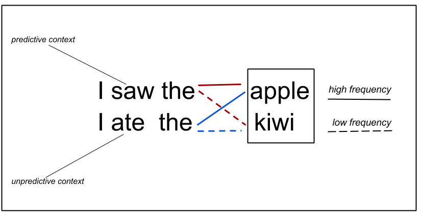

In this section, we expand on the example experiment we've introduced above, which manipulated word frequency. We extend this example of a by-2 design to 2x2 design.
But first things first. We'll follow the guidelines described so far and being by outlining a research hypothesis that we want to test.
For this example experiment, we start with the hypothesis that language processing is expectation-based. That is, we hypothesize that comprehenders automatically draw on implicit statistical knowledge about the distribution of linguistic elements while processing language. Although we will not further focus on this year, this hypothesis is in turn derived from a more general theory--namely, that the brain makes rational use of available information to robustly and efficiently infer linguistic structure (and thereby sentence interpretations) from noisy perceptual input.
To operationalize this hypothesis, we will narrow it down further. Specifically, we plan to test whether expectations about upcoming words affect how fast these words are read. That is, we are testing the expectation-based hypothesis with regard to expectations about words while using reading (rather than, for instance, listening or viewing sign language) as the mode in which language is presented.
If the expecation-based hypothesis is correct, words that are more expected should be read more quickly and words that are less expected will be read more slowly. It is also possible that some of the effects of processing difficulty due to a word's expectedness will spill over, thus affecting the reading times of subsequent words. With this in mind, we are now ready to describe the design we will use to test this prediction.
We will test our working hypothesis in a 2x2 design, by crossing word
frequency (high vs. low frequency) with contextual predictability (high
vs. low predictability). This design is illustrated by Figure 1, which
shows an example of a critical item in its four (2x2) conditions.

This design allows us to test the expectation-based hypothesis in two ways. First, if a word is in a high predictability context (e.g., "apple" or "kiwi" after the verb "ate") then it should be read more quickly. Second, if a word is in a low predictability context (e.g., after the verb "saw"), then more frequent words (e.g., "apple") should be read more quickly than low frequency words (e.g., "kiwi").
That is, we might predict contextual predictability and word frequency to interact, with frequency effects being larger (or even only present) in the low predictability condition. Alternatively, we might find that contextual predictability and word frequency have independent additive effects on reading times.
The design in Figure 1 is an example of a within-item design: across participants, each critical item occurs in all conditions (this does not mean that every single participant sees each item in all of its conditions; more on that below).
With regard to participants, we could conduct the experiment as within- or between-participant design. For now, we will assume that we will take the simplest option and make the design within-participant.
Of course, we don't want to run an experiment with just one item. As we've discussed above, that wouldn't let us generalize from whatever we find in our experiments to how people process language more generally. Instead, our experiment will have many items, all of them following the same structure of the example item shown in Figure 1. In the following sections, we will cover more details about items and then go through how we can construct lists of items for our experiment.
1. What is an item?
2. What is a list?
3. True or False: In our case, each condition must have 6 to 8 items.